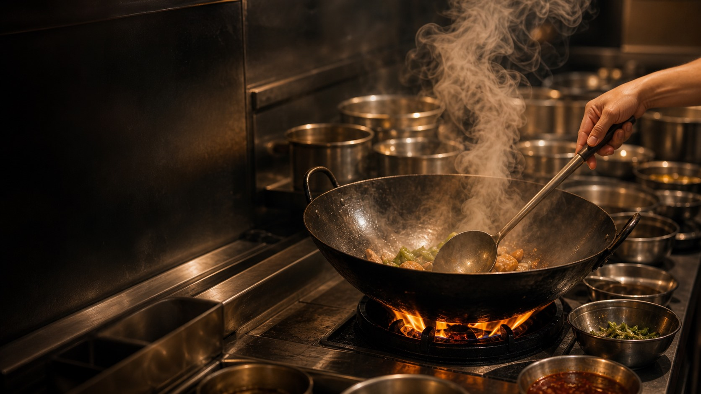
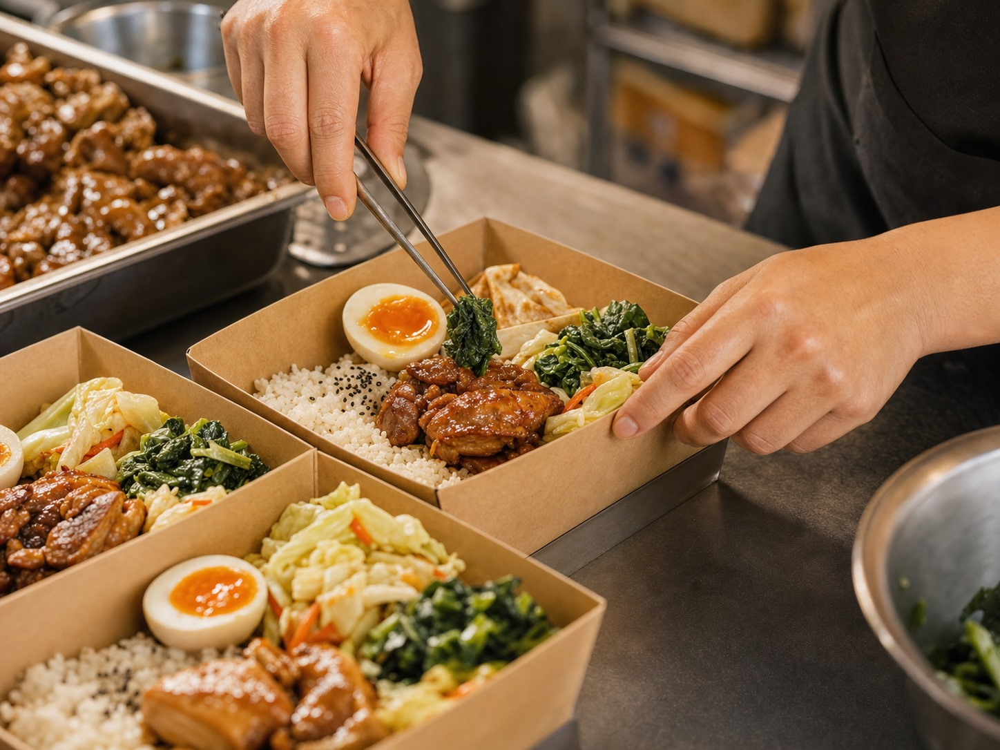
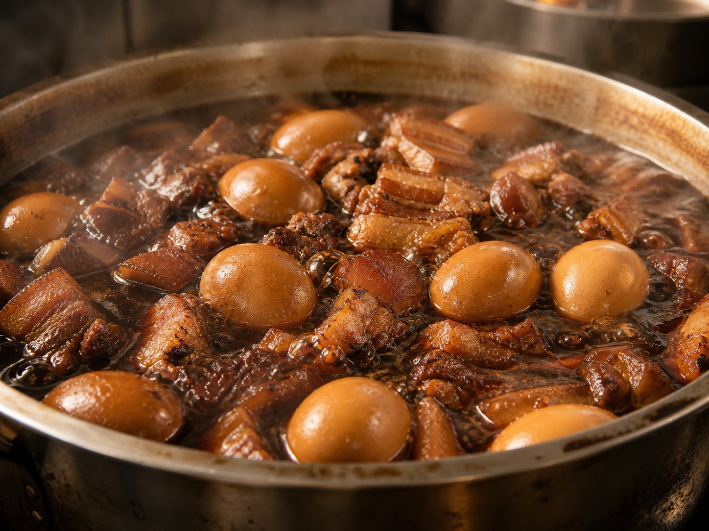
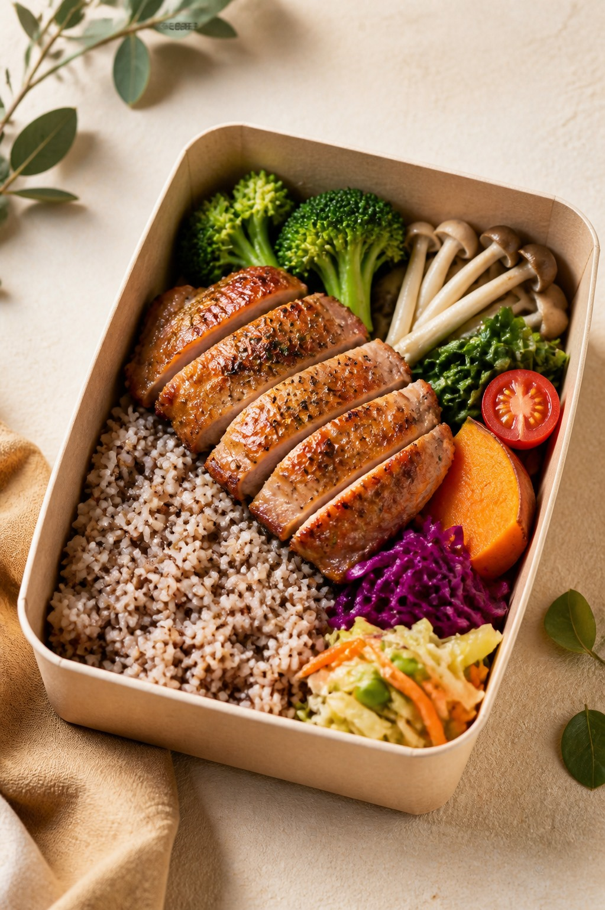
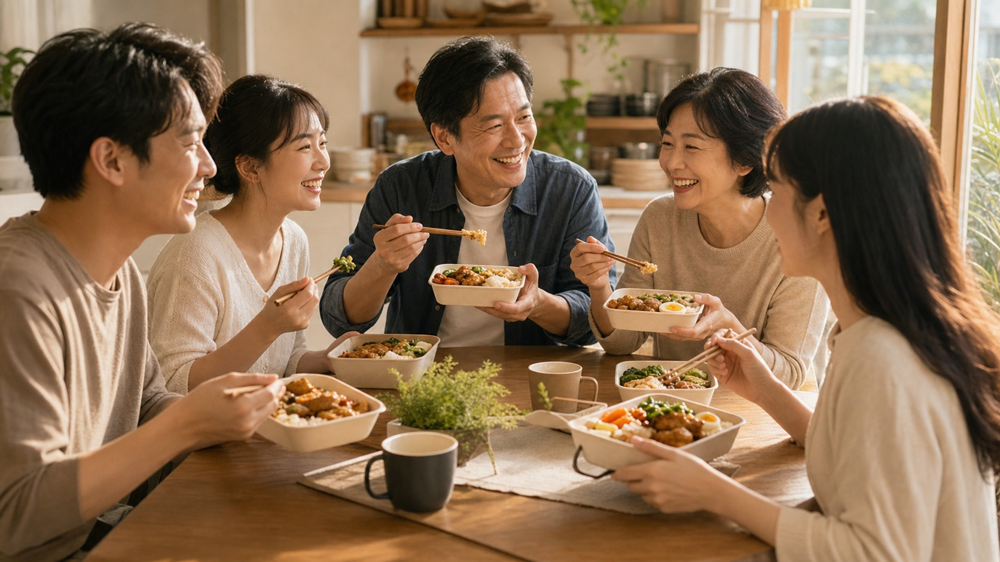

LAI BENTO · OUR STORY
一個便當，
是一份重新開始的力量
從清晨備料到中午出餐，每一份餐盒都把健康、台味與家的溫度放在同一張餐桌上。
LAI
健康・輕食・用心做
Fresh Everyday
LAI BENTO
一個便當，是一份重新開始的力量
很多人以為便當，只是填飽肚子。但對 LAI 家來說，一個便當，是一天重新開始的力量。
每天凌晨，當城市還沒醒來，廚房的燈已經亮起。洗菜、熬湯、滷肉、煮飯，不是為了做最快的便當，而是希望每一位打開餐盒的人，都能感受到一份像家一樣的溫度。



我們怎麼做好一個便當
01
當日備料
蔬菜、主食與配菜依照當日出餐量準備，讓餐盒保持新鮮，不把昨天的味道帶到今天。
02
均衡搭配
每份餐盒都兼顧主食、蛋白質與蔬菜比例，健康輕食吃得清爽，經典台味吃得滿足。
03
穩定出餐
從個人午餐到企業團訂，都用固定流程控管份量、口味與時間，讓每一次打開餐盒都安心。
我們想做的不是一次驚喜，而是每天都能被信任的一餐。
OUR PROMISE
我們相信，真正的健康來自於日常的每一餐
真正的健康，不是昂貴的食材，而是每天都能吃到乾淨、均衡、穩定的一餐。
因為，真正值得信任的品牌，不是偶爾做好一次，而是每天都做好。


來，吃飯了。
無論今天是上班族、學生、健身的人，還是想念家鄉味的人，只要打開 LAI 家便當，就像有人對你說：「來，吃飯了。」
LAI
來，一起吃頓好飯
LAI BENTO